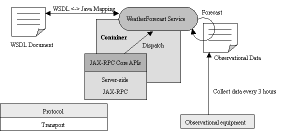
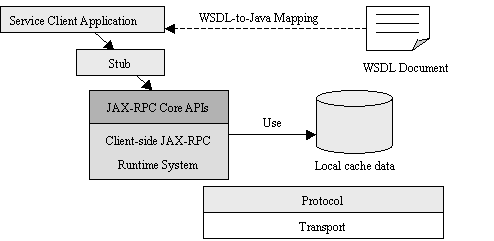
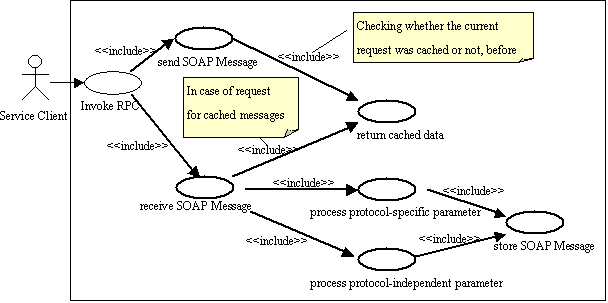
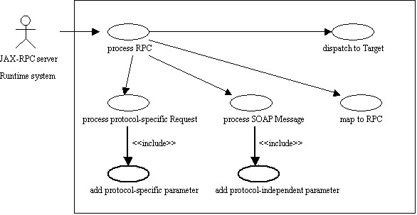
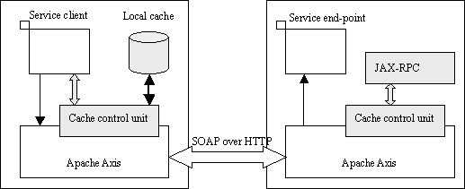
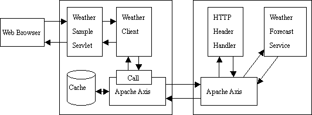

|
|

|

|
|
|
|
|
| Apache | Web Services | Axis |
WebServices - Axis - Caching Early Draft
Table of Contents
1. IntroductionAt the present time, SOAP is actually famous as a transport-independent protocol. But in fact, HTTP protocol is the leading binding of SOAP implementations. In addition, a lot of JAX-RPC implementations use the HTTP POST method for invoking Web Services based on SOAP 1.1 specification. The HTTP POST method is specified in HTTP 1.0 specification (RFC 1945) as uncacheable. Because of this, SOAP is also uncacheable in the present situation. This document proposes a set of APIs for JAX-RPC and Messaging styles to enable the cache control mechanism in various SOAP implementations. 1.1 Design Goals
The goals of this document are as follows:
1.2 AcknowledgmentsSatoshi Koyama, Takayuki Nagakura, Kenji Suzuki, and Masashi Takeichi (all from NTT DATA corporation and its business partners) have provided precious technical input to this document.1.3 StatusThis document is the early draft version of the proposal.1.4 Notational Conventions
2. Caching Mechanism UsecaseThis chapter describes use cases for the Cashing model in a non-prescriptive manner. Later chapters of this document specify requirements and APIs in a prescriptive manner.2.1 Weather Forecast Service
The following description uses a weather forecast service example to illustrate Caching
Mechanism concepts.

2.1.1 Service Description
The WeatherForecastService endpoint defines and implements the following Java interface.
Code Example: Interface of WeatherForecastService
package com.example;The WeatherForecastService has the following features to note:
2.1.2 Service Use
A service client uses a JAX-RPC service by invoking remote methods on a service endpoint.
The following diagram shows how a service client uses JAX-RPC runtime and Caching
Mechanism.

2.2 Caching Mechanisms
This section describes an overview of Caching Mechanisms.
2.2.1 Service Client
The following use case diagram shows how a client-side JAX-RPC runtime system uses local
cached data which is stored by Caching Mechanisms.

2.2.2 Server Side
The diagram shows how a server-side JAX-RPC runtime system informs that a response
message is cacheable to the service client.

3. Requirements
This chapter specifies the proposed scope and requirements for the 1.0 version of Caching
Mechanisms. These requirements will be described in more depth in the later chapters.
R01 Protocol Bindings
4. Reference
5. Appendix: Prototype of Caching mechanism
In order to demonstrate the feasibility of Caching Mechanisms, I made a prototype of a cache
controller which provides a local cache on the service client side.

The hatched areas indicate the extended modules for Apache Axis as a typical JAX-RPC
implementation. The detail of this implementation (i.e. class diagram, sequence diagram, and
Java docs) will be provided after translation and review.
6. Appendix: Sample Application
This sample application uses the WeatherForecastService to enable a cacheable scenario. When
an end-user sets a location (like as Tokyo, Osaka, or Kyoto) and invokes the service, the
system returns chance of rains for the specified area. Additionally, if the request is cached data
and the cache is still valid data, the response message will be picked up from the cache
repository.

Note: The role of the HTTP Header Handler is to set a HTTP protocol header for cache controls.
7. Appendix: Unresolved issues
The following items are to be determined.
|